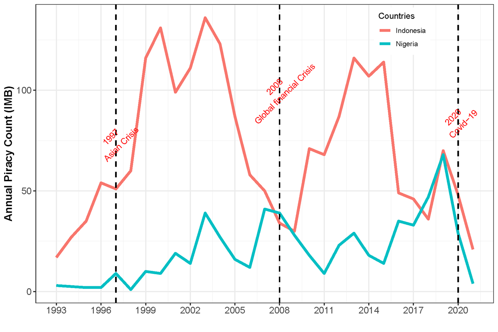

2020 was a bad year for maritime piracy. The global number of sea-piracy incidents rose by over 20% from 2019 and West Africa experienced the highest number of attacks and attempted attacks since data collection began in the early 1990s at the International Maritime Bureau’s Piracy Reporting Center (see Figure 1). But the Gulf of Guinea was not the only piracy hotspot in 2020. In fact, attacks increased in Southeast Asia and the Americas, as land-based crime appeared to spill over into the ports and anchorages of Dumai, Taboneo, Callao, and Macapa. Kidnappings jumped sharply in 2020 and the illegal boarding of steaming ships reached its highest level in five years. Some recent headlines appear to minimize the threat of sea-piracy and fail to appreciate the harmful economic effects of the COVID-19 pandemic. Yet, previous financial crises have been followed by significant surges in maritime crime. The novel Coronavirus will likely produce similar conditions that have fueled ship targeting in the past.

The 1997-98 Asian financial crisis sharply reduced incomes, increased regional unemployment, and drove up food prices, all of which amplified poverty levels in many Southeast Asian countries (see here). Pirate attacks in the region subsequently jumped by 80% from 1998 to 1999 and another 50% from 1999 to 2000, going from 89 incidents recorded by the IMB in 1998 to 247 incidents only two years later. Sea-piracy did not return to its pre-Asian financial crisis levels until 2006, and then the region was buffeted by a global recession that began in the United States only a year later. Incidents of sea-piracy and armed robbery on ships nearly quadrupled over the next five years in Indonesian waters and Somali pirates dramatically escalated their seizure of commercial vessels beginning in 2008 (see Figure 2).
The economic effects of the COVID-19 pandemic have been similarly devastating: job losses, negative growth rates, and increased poverty. Indeed, according to the IMF, China is the only major economy projected to have a positive growth rate in 2020. The economies of most other countries contracted, some by more than 5%. Overall, the global economy likely shrunk by 4% in 2020 and an additional 120 million people were pushed into poverty (see here). The economic costs of the pandemic have been particularly challenging for many piracy-prone countries. The IMF expects sizable unemployment increases in Indonesia, Uruguay, Brazil, Mexico, and the Philippines. Grim, and longer lasting, economic conditions are anticipated for many countries in West Africa. It is true that the IMF expects an economic rebound in 2021 and some countries, like China, may experience a V-shaped recovery. But, pre-COVID economic malaise in many places almost certainly spells a slower recovery process for most countries.
Underlying economic conditions remain important for understanding why individuals engage in illicit maritime activities. Multiples studies point to the absence of legal opportunities in the local economy, particularly the local fishing industry, as a motivating factor that drives maritime crime and violence. The Corona-Virus pandemic is currently hitting the global fishing industry hard. COVID-19 mitigation efforts have led to downturns in the Fish Price Index as well as expected future declines in supply, production, consumption, and trade revenues. The FAO anticipates global fish production fell by 1.7% in 2020, which would equate to a 1.4% decline in aquaculture output, a devastating downturn not seen in 60 years (for more, see here). COVID-19 restrictions have especially hit workers hard in developing countries as demand for seafood has dropped in many wealthy countries.
The IMB is not the only organization to note an increase in maritime crime in 2020. Other piracy reporting centers also reported sizable increases, as well (see Figure 2). The International Maritime Organization, an arm of the United Nations, and ReCAAP, the Regional Cooperation Agreement on Combatting Piracy and Armed Robbery against Ships in Asia, both registered sharp jumps in attacks in 2020. And, the U.S. Office of Naval Intelligence, through its Anti-ship Activity Messaging System, recorded 264 incidents in 2020, an increase of over 70% from 2019. All of these organizations also show striking surges in piracy incidents following the two most recent financial crises.
Figure 2: Piracy and Armed Robbery on Ships, Various Reporting Organizations
To be sure, global piracy counts currently remain far lower than previous surges and there are notable successes in counter-piracy operations. In 2020, for example, no incidents were reported by the IMB in the greater Gulf of Aden and reports from Southeast Asia mostly noted simple armed robberies on ships rather than more serious hijackings or crew abductions (see ReCAAP annual report). Only one category 1 incident (the most serious type of attack) was reported by ReCAAP in 2020, a significant drop from only a few years ago. Further, port security in Malaysia appears to have improved and security enhancements at the Chittagong Port in Bangladesh continue to keep robberies on anchored ships well below their numbers from only a few years ago (additional CCTV cameras were installed to monitor port activity and restrictions on movement were added – see here).
Still, the Singapore Straits remains an area of particular concern (mostly the eastern sector). Over 100,000 vessels transit the narrow, 105 km passage every year, carrying critical supplies, such as oil, iron ore, food, and palm oil. In 2020, the IMB recorded 23 attacks in the Straits (see Figure 4), nearly doubling the number of incidents from 2019 and reaching the highest level of sea-piracy activity recorded by the IMB in the Singapore Straits since data collection began. ReCAAP shows higher pirate activity in the Straits during 2014 and 2015, but both organizations report significant increases in ship attacks over the past three years.
Figure 3: Number of Piracy Incidents in Singapore Straits, 1993-2020 (IMB data)
Despite increased pirate activity in the Singapore Straits, the Gulf of Guinea remains the most dangerous maritime zone in the world today. Over 40% of all pirate attacks and attempted attacks occur in the waters of West Africa, which is the highest percentage since IMB data collection began. The incidents in West Africa continue to be more violent than other regions and nearly all crew abductions recorded globally occur in the greater Gulf of Guinea. At least 130 crew members were taken hostage by West African pirates in 2020, nearly double from just two years before, and sailor kidnappings do not appear to be slowing so far in 2021. On January 23rd, 15 crew members from a Turkish-operated but Liberian flagged ship 98 nautical miles northwest of Sao Tome and Principe in the Gulf of Guinea were abducted by pirates. The M/V Mozart was en route from Lagos to Cape Town when it was attacked. Along with the 15 kidnapped sailors, one Azerbaijani crew member was killed in the encounter. The pirates are demanding a ransom from the shipping company for the release of the kidnapped crew. Only a few days later, another large cargo ship was boarded by pirates in the Gulf of Guinea. This time, however, they failed to break into the ship’s citadel and were forced to quit the vessel.
While piracy and armed robbery on ships increased in 2020, the pandemic has also affected maritime crime more generally, sometimes favorably. The first half of 2020 in the Indo-Pacific saw an increase in Illegal, Unreported, and Unregulated (IUU) fishing compared to 2018, but actually a decrease from the same period in 2019. Most reports of IUU fishing from January to June 2020 occurred in the territorial waters of the Philippines, and then in Sri Lanka, Indonesia, Malaysia, and Thailand (see more here). In the Philippines, the COVID-19 lockdown from March 17 to May 15 occurred during the country’s primary fishing season. IUU fishing appears to have spiked during this period. Maritime contraband smuggling, however, saw a decrease from 2019 perhaps owing to COVID-19 restrictions. The largest types of contraband smuggled were drugs first, then tobacco, domestic products, and fuel (more here).
Meeting the challenges of maritime security in the shadow of a global pandemic requires an inclusive and comprehensive response. Our research, funded by the Office of Naval Research through the Minerva Initiative, builds a framework to understand how pirates and other criminal actors inhabit maritime spaces where weak institutions, and a lack of naval power and cooperation among states, persists. In order to meet these complex maritime challenges head on, governments must strengthen regional cooperation, enhance maritime law enforcement, improve local governance, and address underlying economic conditions. States must further decouple maritime security from other larger sources of inter-state contention. Local capacity building ought to be at the center of any effort to combat maritime piracy and crime. In its annual report, for example, ReCAAP commended Filipino authorities for their intensified patrols in Manila and Batangas, which have improved security.
The United States must also continue its commitment to maritime security by deepening its relationship with allies and partners alike, especially in the Indo-Pacific. Through the FY16 National Defense Authorization Act, Section 1263, the Indo-Pacific Maritime Security Initiative (MSI) provides Indonesia, Malaysia, the Philippines, Thailand, Vietnam, Sri Lanka, and Bangladesh with maritime security assistance and training. In Indonesia, this has meant “human capital improvements for strategic planning, budgeting, sustainment, and maritime security” (U.S. Department of State; also see here). In August 2020, the United States Navy once again hosted the Rim of the Pacific (RIMPAC) multinational maritime exercise. Ten countries engaged in anti-submarine warfare, maritime intercept operations, live-fire training events, and other activities all designed to build cooperative relationships to better tackle maritime insecurity.
Finally, the international community needs to aggressively combat the economic fallout from the COVID-19 pandemic. A focus on long-term inequities to better prepare for future shocks may help alter an individual’s calculus regarding the benefits of illicit activity, especially if secure employment and an adequate social safety net were available. Perhaps the best place to start is to encourage countries to fully implement the Sustainable Small-Scale Fisheries (SSF) guidelines outlined by the FAO. Many workers in the global fishing industry lack adequate legal and other protections. Interventions to shore up aquaculture production must give workers the tools to demand the necessary safety equipment, working conditions, and access to social services while the pandemic continues.